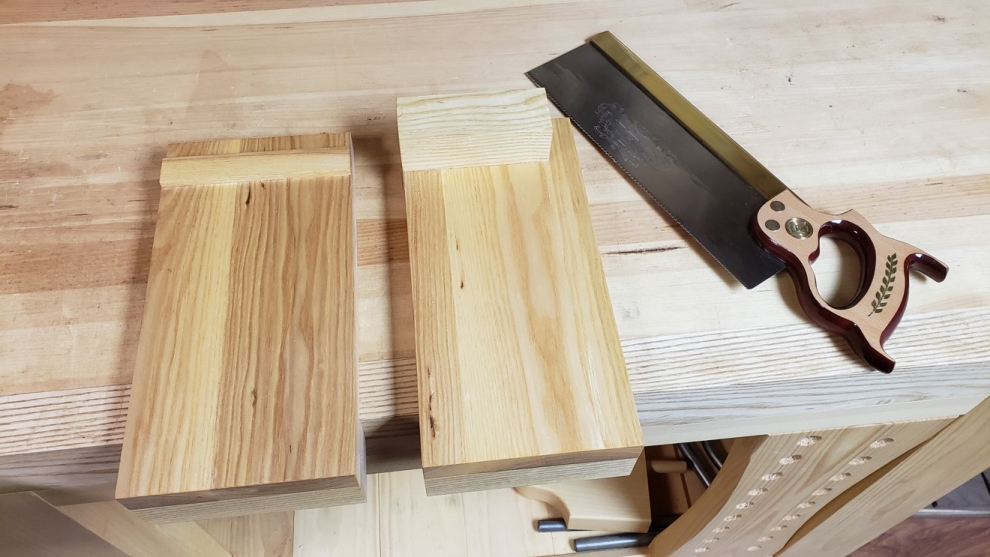
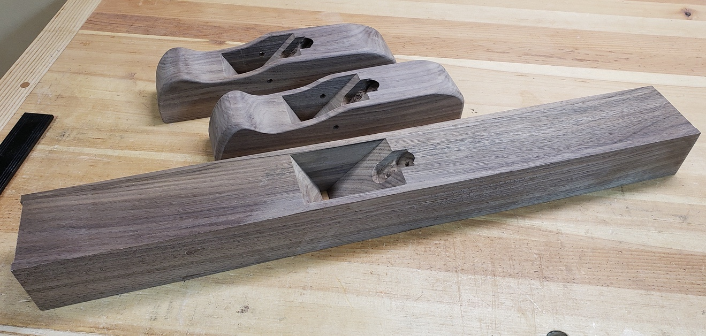

Woodworking Jigs and Aids
Throughout high school woodworking classes and my earlier projects, I hadn't picked up on the value of using jigs. Looking back, I don't know how I worked without them. One of the main reasons I wouldn't dispense with my table saw is due to the number of jigs I use to increase its versatility. Jigs are a vital part of your woodworking arsenal with widely varied purposes that add simplicity, accuracy, safety, and efficiency to your woodworking.
My jigs and aids inventory, typically made from scraps of plywood or MDF continues to grow. There are far too many jigs to cover here and the jigs you build depends on the tools and machinery you use in your shop and the types of furniture you make. I've highlighted the main jigs I use and will cover others in this journal specific to the various projects.


A shooting board helps produce exact and true edges for gluing. There are three common types: joint and square, mitre, and donkey's ear. The one I've built is a combined joint and square and mitre shooting board. The stop prevents chip-out on the far side as the plane blade exits the wood. I use one most often for squaring the end of boards and edges on smaller pieces, such as for box construction. Using a shooting board requires some practice to adjust the plane properly to remove just the right amount of shaving and develop a feel for feeding the board into the plane. Once you get the hang of it, the technique produces fantastic results quickly.
French Cleats
French cleats are a simple and excellent way to add a lot of flexibility and versatility to your workshop. A French cleat is a moulding with a 30º to 45º slope attached to the wall that provides a way to secure objects to a wall. A matching edge moulding is attached to the back of an object and then hooked onto the wall cleat. In my workshop, I use French cleats to hang wood racks, a clamp rack, a tool rack, and a nail gun cabinet.
Nail Gun Cabinet
Nail guns and other items were starting to pile up in my workshop, so I built a cabinet to store them out of the way. Unintentionally yet conveniently, the slots for the nail gun are large enough to serve a dual purpose, housing a nail gun and a cordless drill in a single slot. The bottom shelf holds the cordless drill chargers and other items, and the top of the cabinet provides additional storage for often-used items. I built this cabinet with pieces of scrap pine plywood.

Sandpaper Organizer
For years, I've had sandpaper piled up on a corner of my workbench, so one day I decided to make an organizer to clean up the constant mess. Using scrap plywood I quickly design it to hold full sheets, half sheets, quarter sheets, and various sanding blocks.
Handmade tools
I've always admired the idea of making hand tools but was intimidated by the intricacy and accuracy that is required. The ability to create and customize unique, beautiful, and useable tools appeals to me. I took the opportunity to make hand tools during the COVID-19 quarantine. I was building projects to reduce the accumulated scrap wood and came across a small block of olivewood that I thought was suitable for a small try square handle. In less than an hour I built a beautiful and accurate try square.
Next up was a spokeshave. I ordered a large spokeshave hardware kit from Lee Valley and used the detailed instructions provided to make it. I started with four wood blanks made with various types of wood. I scrapped a couple of blanks along the way due to the poor suitability of the wood. The final spokeshave shown below used maple, which is best. My handmade spokeshave works far better than the cheap Stanley spokeshave I've been using.
Encouraged by the results of the try square and spokeshave, I ordered two plane kits to make a smooth plane and a jointer plane. I'd been looking to purchase used or antique planes but wasn't finding what I wanted at a reasonable price. I figured it was worth trying to make my own.
I used walnut to make the blanks, but the finished thickness was about a ¼" less than indicated in the plans, which became a problem later in the build. To correct the problem, I glued Caribbean rosewood to the bottom of the planes. I'm doubtful this will hold up over time due to laminating two different wood types, but if I need to, I'll make new plane bodies. I used the design in the plans for the smooth plane but decided to build a razee-style jointer plane.
When the time came to sharpen the blades, set up the planes and test them out, I was absolutely shocked at how well they worked. The blade adjustment capabilities of the kit add a modern improvement to traditional wooden planes, so setting the blade for a proper cut is easy. Given the large size of the jointer plane, I was surprised at how light it was, which took some adjustment to get used to. I guess I've gotten used to metal planes with significantly more mass.
I had just purchased some carving chisels, so I decided to add decoration to the jointer plane handle. I thought it better to try carving on a tool that wouldn't matter as much before carving a piece of furniture. I didn't get the results I was hoping for, but I think it's a pretty cool and unique-looking plane. Best of all, both planes are excellent to work with.
